OVERVIEW
活動概覽
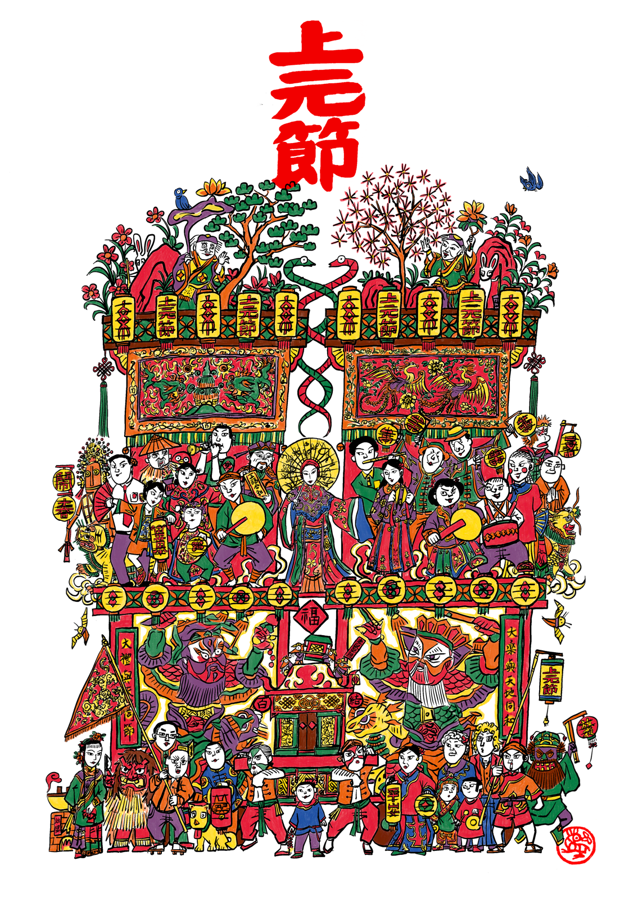
2023癸卯上元由莊逸軒發起，原訂共同主辦的莊奕凡、陳塵在活動前一個多月決定退出。原參與的遊牧創作者也大幅減少。最後，改由蟬雨越讀主辦，以莊逸軒聚集的書店客人為主要籌備團隊。是上元節首次舉辦兩天。
首日：蟬雨越讀 → 五福一路 → 鹽埕夜市
次日：新豐代天府 → 繞鹽埕區 → 西子灣觀景平台
現場紀錄
THEME
年度主題
疊加（而非共創）
必須從共識的理念基礎往上延展（文化性問題）
＝反對在理念矛盾狀態下的發展（如文化與反文化作為共同基底）
關係式的工作方法
必須以關係發生而非表演性為目的（過程＞結果）
＝反對以成果為目的導向的運作方式＝必須對其可複製性有人與物質條件的假設
＝反對刻意追求事件的獨一性
過節
一種具體在時間感上的文化共識
＝一種時間的循環性在秩序上的假設
＝一種日常與非日常在關係上平衡的假設
拜年
一種與城市、他者之間的關係形式→社群、公共關係的交陪
＝多個空間在身體感上的連結→上街、遊行在空間上的意義
＝多處空位的拉張可能→參與者本身的可參與性、列隊的成立本身
花燈
一種過程性的連結方式→製作花燈過程可產生的連結（與拜年相互映照）
＝一種藝術性的表現形式→包含圖繪、造型、文字等平面視覺的
＝一種個殊性的表達方式→對商家、個人作為主體代表的參與象徵
除舊佈新
在心理層面上對過往重負在能量上的消減作用→燒舊燈
＝「上元」作為年初第一次對月圓（美滿）的共同歡慶
豐年祝福
對美好想像的能動性表現
＝「結」和「解」作為當代最大祝福的主張（百結與放夜）
春鬧
對於樂、囍、鬧等情感的表現→丑角、群舞
逍遙遊
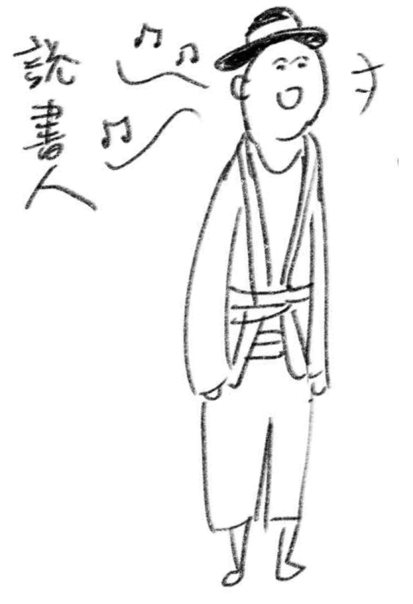
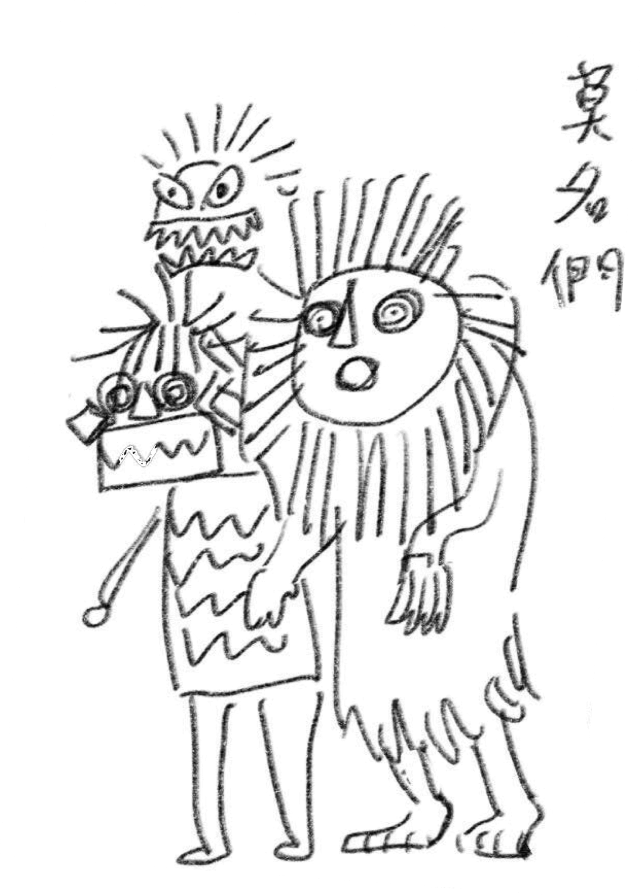
PROGRAM
活動流程
時間僅作參考，上路後，一切莫料，順流而行。
TEAM
策劃團隊

技術視覺

儀式設計

活動行政
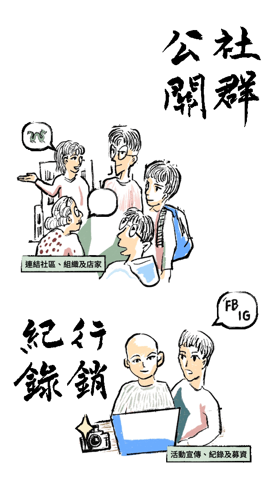
公關紀錄
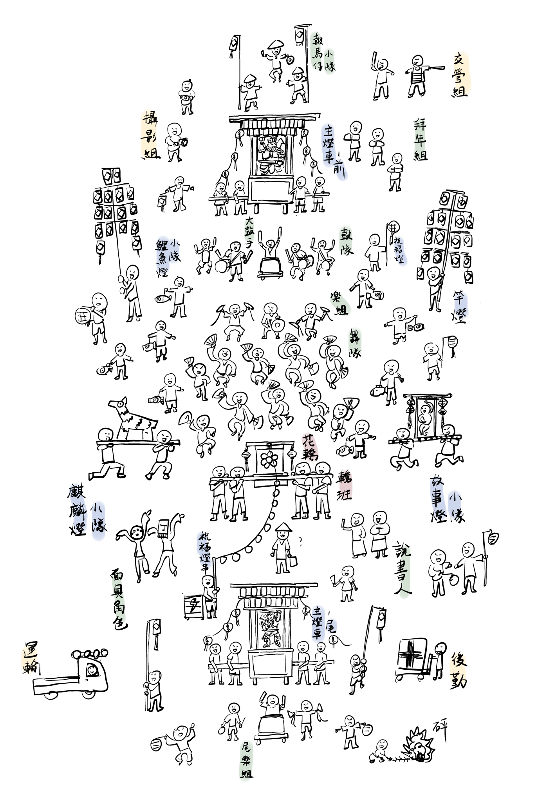
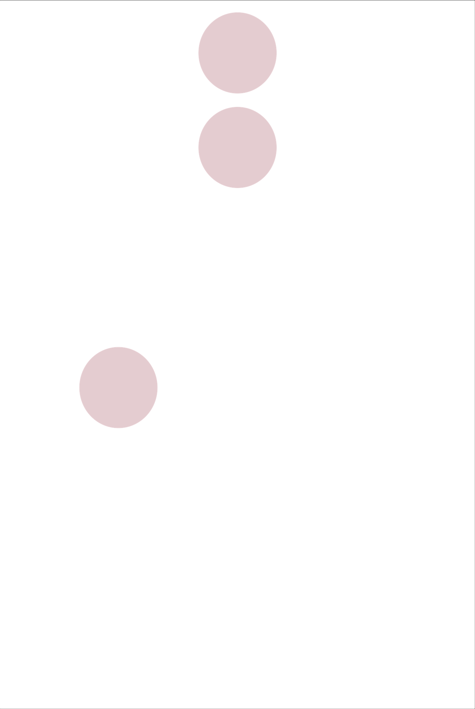
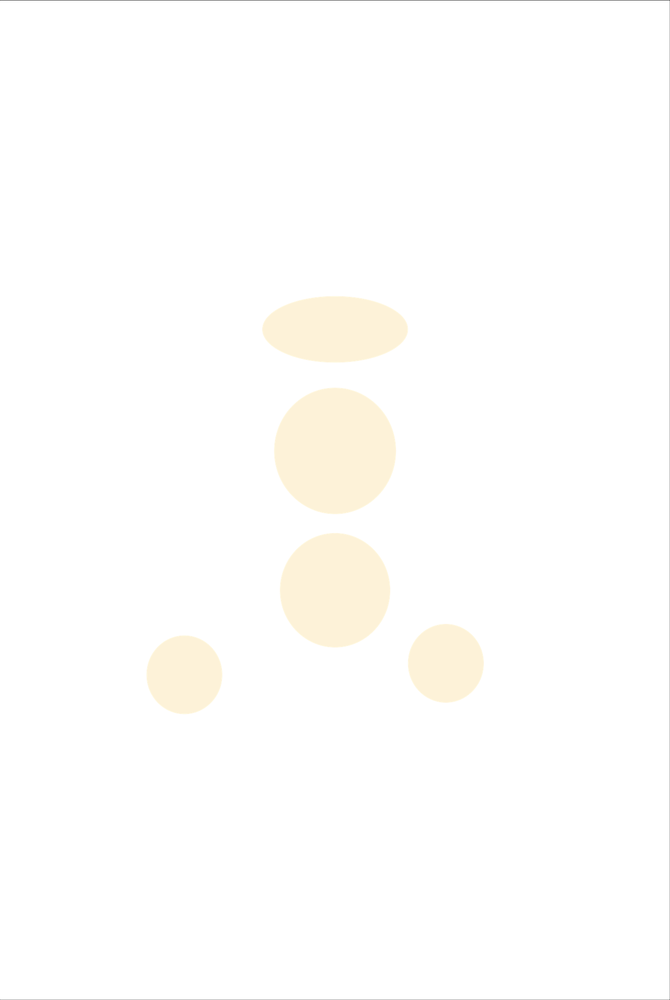
懸停左右標籤，查看各陣分布
ARTWORK
創作內容
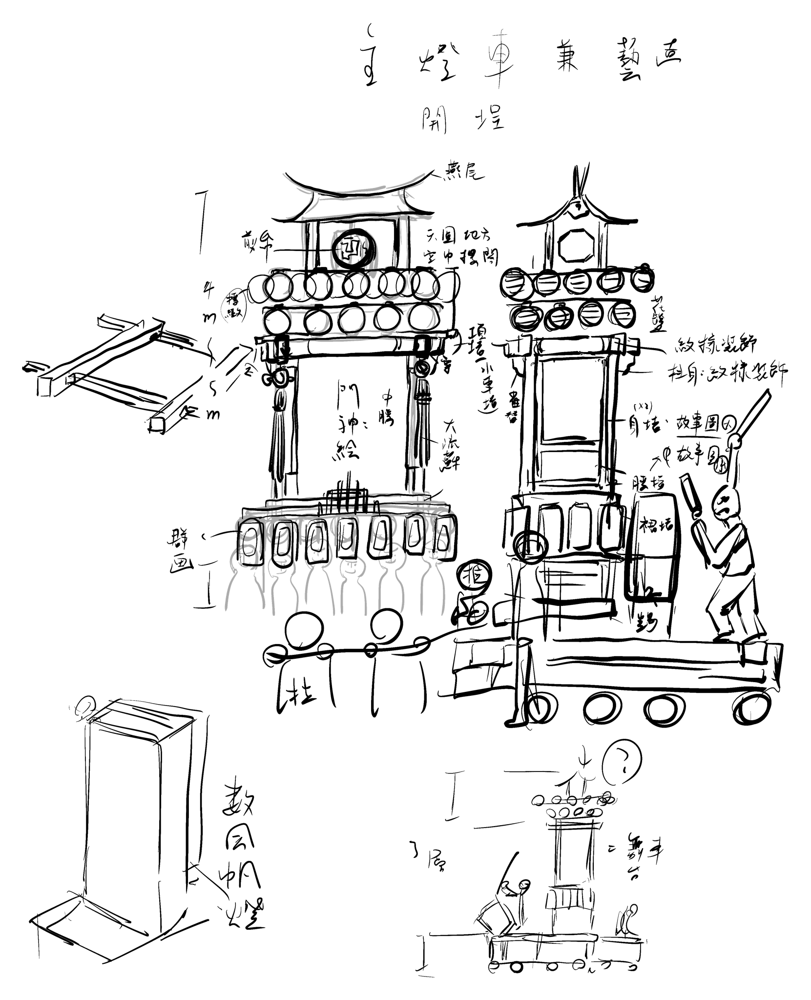
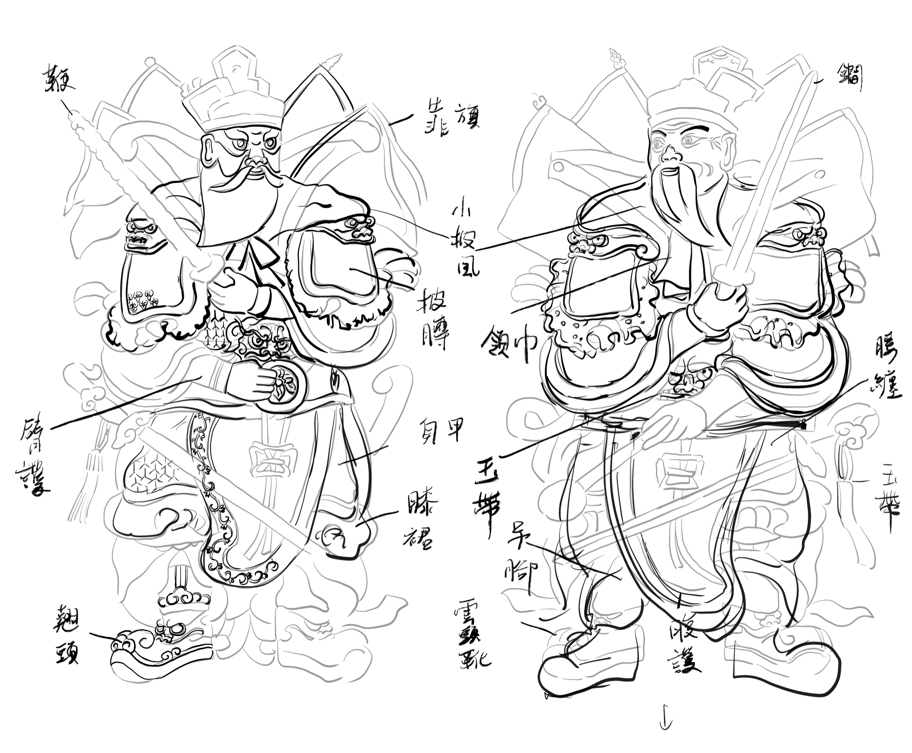
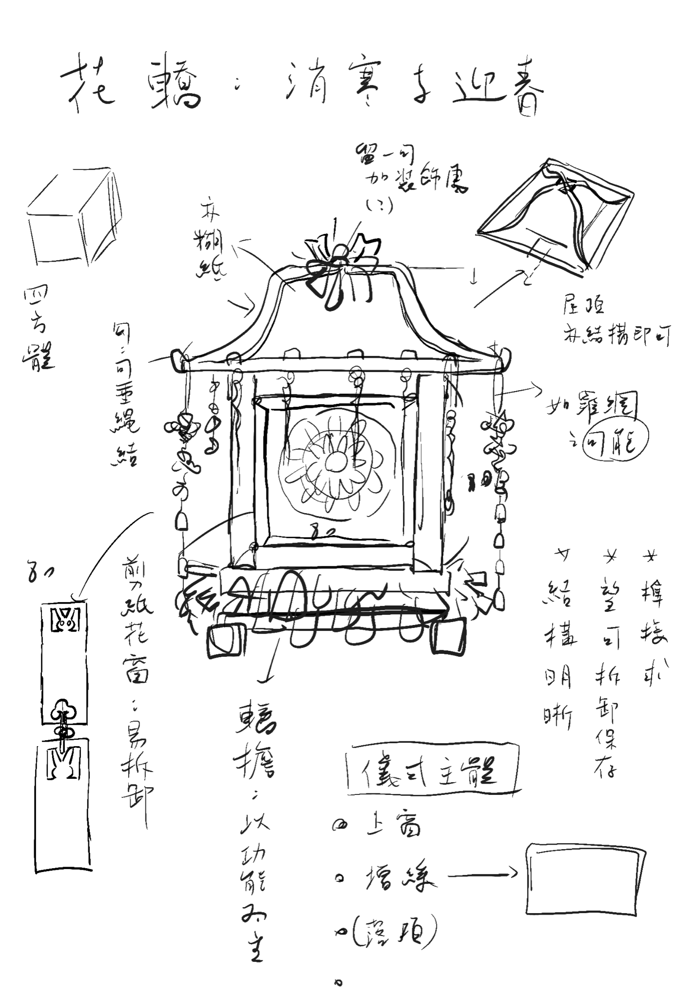
DISCOURSE
創作論述
← 點選左側文章標題
TIMELINE
工作期程
COLLABORATORS
共同創作者視角
← 點選左側創作者姓名
AFTERWORD
跋
上元結束後，有人提醒，這是個可以更與商家、團體合作的活動，贊助也不只是贊助，更能誕生出在地的連結、城市的認同感等，讓延續能夠更堅實。
如果有下次，期待能好好地發展這部份，讓燈火可以傳遞出去，在此還是先感謝這次贊助的商店、朋友們，謝謝你們的支持，這個活動才能順利完成。
感謝！
▍場地協力：新豐代天府、新豐里郭蘇元里長、侯佳榮、侯林玉梅
▍社區協力：陳坤毅、張琳惟、安詳里董輝章里長、中原里洪玄志里長、陸橋里許梅娟里長、鹽埕研究所、許采蓁服務處
▍現場協力：壹倫太鼓、植月攝影工作室、高雄愛河貢多拉遊河船、臺灣摩猴跑酷團隊、Hot Box Barbecue美式煙燻烤肉店
▍路線協助：高雄市政府警察局苓雅分局、高雄市政府警察局新興分局、高雄市政府警察局鹽埕分局、高雄市政府警察局鼓山分局、高雄市政府警察局義交大隊
▍器材物資協力：欣律藝術公司蔡政宏、海青工商、慈明宮、鄭惠中布衣、純新Milk 17
▍社區燈籠題字：引居
▍宣傳響應或贊助商家：Ant手作、Do good coffee & dessert、MADDOG 墨西哥捲餅、SurfAce Apparel -（海洋文化）、Uke Beat烏克麗麗專賣店、乙木、入肥甜點、入船町藝樓、大橘咖啡、小水坑、小房子、小林眼鏡和平店、小徑文化 - 紙膠帶專賣店、小樹的家、山今伴月、台鋁書屋、任性lîmsìng、有。咖啡、米可跟巧克甜點、老耄 x D.CRAZY、西露蔻阿嬤的店、別件室、李家湯圓、叁㭭地方生活、咖啡預備備、松珠寶工作室、爬爬食堂、阿綿麻糬、青鳥書店、品果品果蔬食早午晚餐、屋物丹麥家具、歪歪歪甜點、紅撲撲手感創作、香茗茶行、時昉微傾-人文咖啡烘焙紀實、酒場清志郎、高雄阿婆仔冰、御書房、凱西生活（中正店）、尋物商行、等閑書房、開壺咖啡、圓山眼鏡、福得餐飲、說給花聽、銀座聚場、蔦屋書店、磚麥、貓手二手書店，BOOKING、聯合國餐飲、黛麗莎西班牙餐點、藍虹唱片行、雙子星桌上遊戲專賣店、餽咻 kuì xiū、濱線熊、打狗文史再興會社
▍小額贊助：Akimoto kenta、David、Justin、Nemo、RYAN、方綾琳、王皓正、王楷瑄、朱秀媚、江弦叡、何有廷、吳珮慈、李岱樺、李治臻、李恆、李慧萍、林季紅、林芳均、林品賢、林宣瀚、林宥利、林政諺、林湧崴、林楹喬、邱承翰、施巧菲、施登元、施登文、柯伯麟、洪日慶、孫小坤、張芷薇、張圓媛、張榮桓、張麗琪、莊子緯、許美玲、許棋棋、陳伶璇、陳亮言、陳亮谷、陳俐雯、陳彥廷、陳淑芬、陳惠娟、陳瑞群、陳嘉禎、陳潔君、陳薇筑、麻雅媛、棋禎、黃立言、黃佳瑜、黃逵政、黃雅芳、黃璽悅、楊士毅、楊國煜、楊登南、楊瓊茹、裴裴、劉宜婷、劉翊辰、劉湘怡、歐子玄、歐秉融、歐陽琬茹、潘欣彤、蔡怡亭、蔡昆育、蔡雅娜、鄭宇庭、鄭淳云、鄭惠中、鄭皓允、賴玟蓁、錢婉琦、龍昶維、戴繼宗、薛精竣、謝子秦、謝廷威、謝宛霖、謝明舫、謝姵儀、簡慶亮、蘇怡蓁、鐘文岑、鐘禾芹、龔育誼